TP04 – Containerization and Big Data Environment Deployment Using Docker
0. Project overview
The application containerized in this TP is the analysis of TP03 rewritten as a Python script. It processes the full
Kaggle dataset eCommerce behavior data from multi-category store (files 2019-Oct.csv, 5.7 GB, and
2019-Nov.csv, 9.0 GB) and reproduces the TP03 cleaning steps and measures: total events, unique users, purchases,
revenue, conversion rate, events by type, top 10 brands by revenue, revenue by main category and purchases per hour.
The CSV files are far too large to fit in memory with a plain pd.read_csv, so the script reads them in chunks of
1 million rows and keeps only running totals. The files are never copied into the image: they are mounted
read-only at run time (-v ./data:/app/data:ro), and .dockerignore keeps the 14 GB out of the build context.
The file to analyse is chosen with the environment variable DATA_FILE, so the same image processes October or November.
| File | Role |
|---|---|
app.py | Chunked pandas analysis (cleaning + KPIs) |
requirements.txt | Python dependency: pandas==2.2.3 |
Dockerfile | Recipe used to build the image |
.dockerignore | Keeps data/, screenshots and notes out of the image build context |
compose.yaml | Docker Compose definition (Task 4) |
.gitignore | Keeps the huge CSV files out of GitHub |
Dockerfile
FROM python:3.11-slim WORKDIR /app COPY requirements.txt . RUN pip install --no-cache-dir -r requirements.txt COPY app.py . CMD ["python", "app.py"]
1. Task 1 – Installation
Docker Desktop (Windows) is installed and the Docker Hub account zizoutoumou was created. The installation was
verified with docker --version (Docker 29.9.2) and docker run hello-world, which pulled a test image and ran
a container from it. docker login then ended with “Login Succeeded”, which is required to push an image later.
docker --version docker run hello-world docker login

images/01-docker-version.png (output of docker --version and hello-world).hello-world test.
images/02-docker-login.png (“Login Succeeded”).docker login – Login Succeeded.2. Task 2 – Image
2.1 Create the image for the TP3 dataset
docker build -t zizoutoumou/tp04-analysis:v1 .
Each Dockerfile instruction became one layer of the image. The build context sent to Docker was only about 3 kB, which shows that
.dockerignore kept the 14 GB of CSV files out of the image.

images/03-docker-build.png (end of the docker build output).2.2 Test on a 100,000-row sample
docker run --rm -v "${PWD}/data:/app/data:ro" zizoutoumou/tp04-analysis:v1
sample.csv contains the first 100,000 rows of November and is used as the default file for quick checks. The cleaning removed
105 rows (99,895 clean rows).
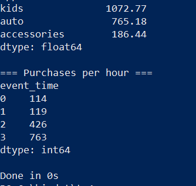
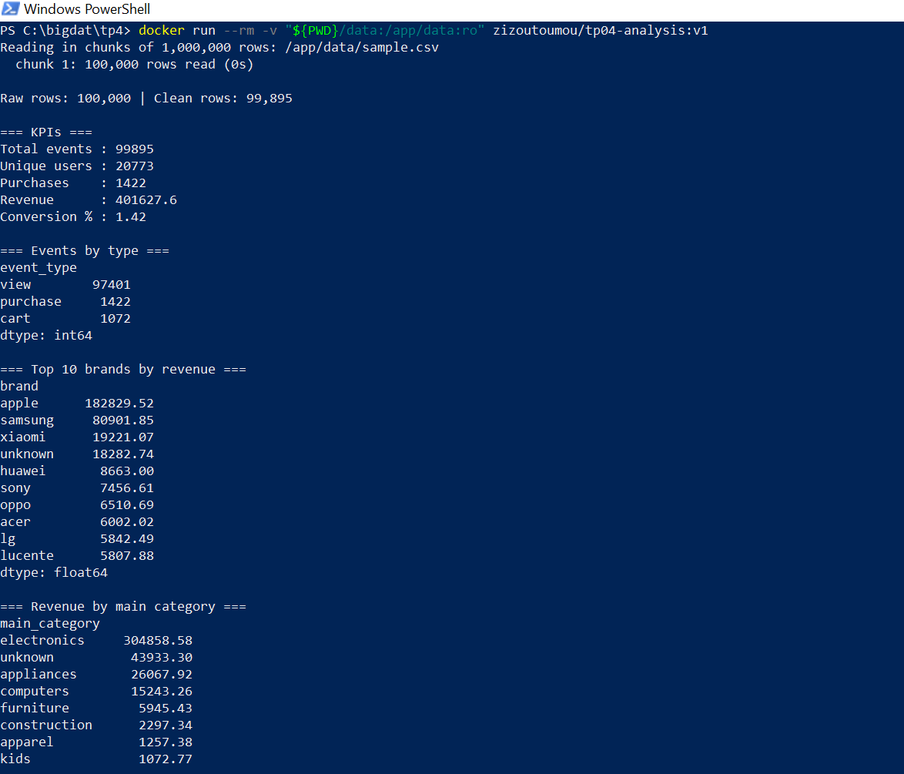
2.3 Run on the whole November file
docker run --rm -e DATA_FILE=2019-Nov.csv -v "${PWD}/data:/app/data:ro" zizoutoumou/tp04-analysis:v1
67.5 million rows were processed in 68 chunks in 333 seconds. Container memory stayed under 1 GB (measured with docker stats,
775 MiB at one point).
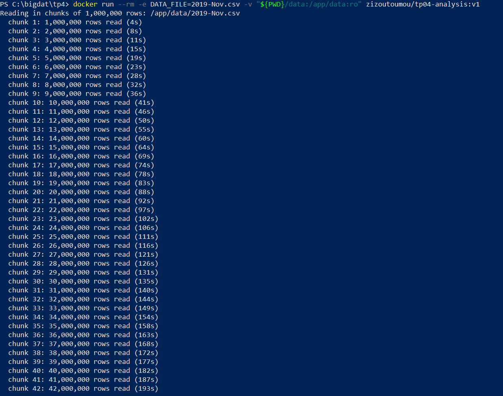
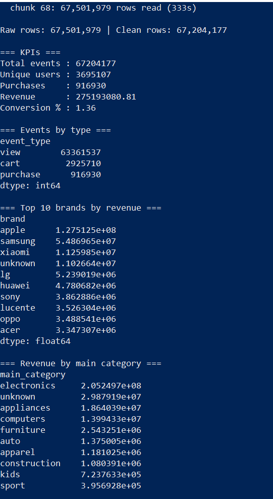
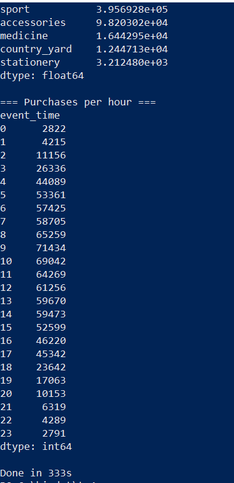
Done in 333s).2.4 Run on the whole October file
docker run --rm -e CHUNK_SIZE=2000000 -e DATA_FILE=2019-Oct.csv -v "${PWD}/data:/app/data:ro" zizoutoumou/tp04-analysis:v1
Same image, different DATA_FILE, no rebuild. 42.4 million rows were processed in 196 seconds.
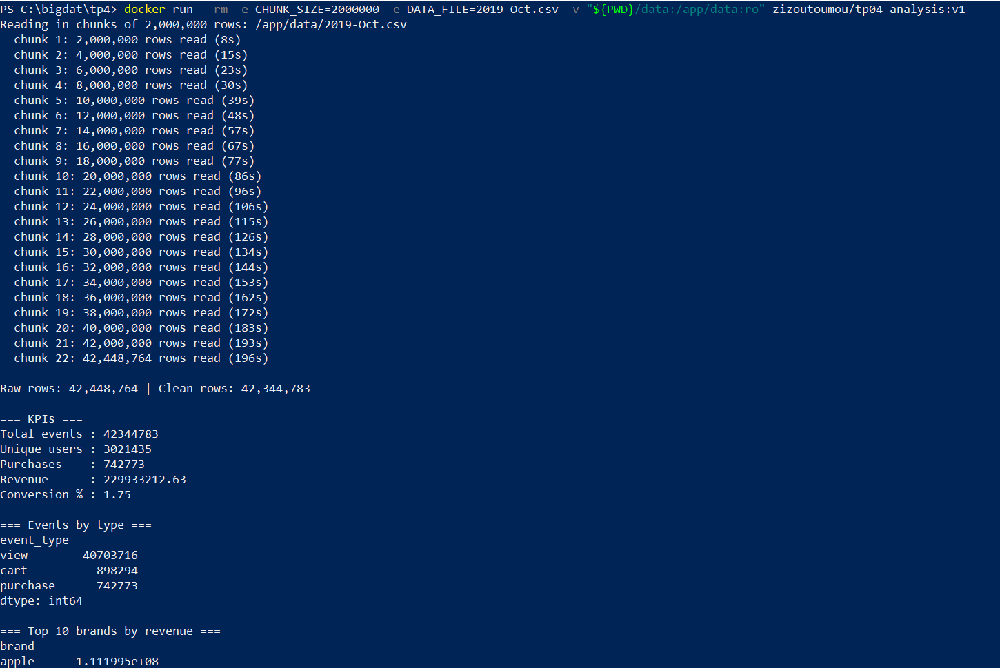
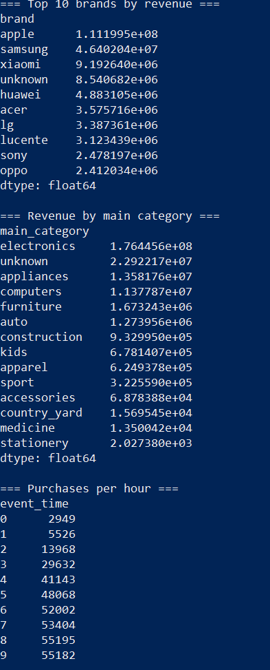
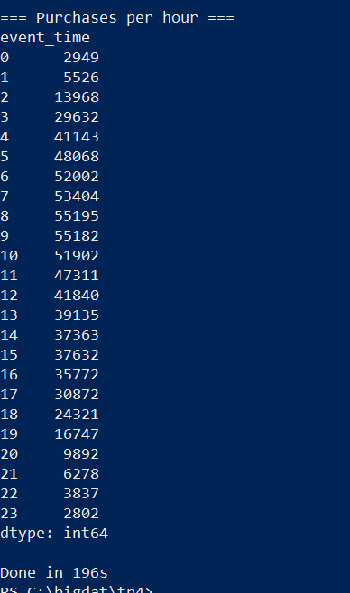
Done in 196s).2.5 Results summary (full dataset)
| Metric | TP03 (3M rows) | October 2019 | November 2019 |
|---|---|---|---|
| Rows read | 3,000,000 | 42,448,764 | 67,501,979 |
| Clean rows | ~3,000,000 | 42,344,783 | 67,204,177 |
| Unique users | 416K | 3,021,435 | 3,695,107 |
| Purchases | ~44K | 742,773 | 916,930 |
| Revenue | $13.34M | $229.93M | $275.19M |
| Conversion rate (purchases / events) | ~1.5% | 1.75% | 1.36% |
| Top brand | Apple (~$6.4M) | Apple (~$111.2M) | Apple (~$127.5M) |
| Second brand | Samsung (~$2.7M) | Samsung (~$46.4M) | Samsung (~$54.9M) |
| Top main category | electronics | electronics (~$176.4M) | electronics (~$205.2M) |
| Processing time in Docker | – | 196 s | 333 s (329 s with Compose) |
The conclusions of TP03 hold on the full data: Apple and Samsung dominate revenue, electronics is by far the strongest category, and almost all events are views. The “unknown” group (rows without brand or category) ranks second by category and fourth by brand, so missing data matters. The hourly profile is now complete over 24 hours: purchases peak around 9–10 h (UTC) in November and 8–10 h in October, and are lowest at night.
2.6 Push the image to Docker Hub
docker push zizoutoumou/tp04-analysis:v1
The push uploaded the 10 layers of the image and ended with the digest sha256:486ea2e76fcb…. The Docker Hub page shows the same index digest,
the platform linux/amd64 and a compressed size of 90.56 MB. The image contains no data, only the program, so the same image works for October and November.
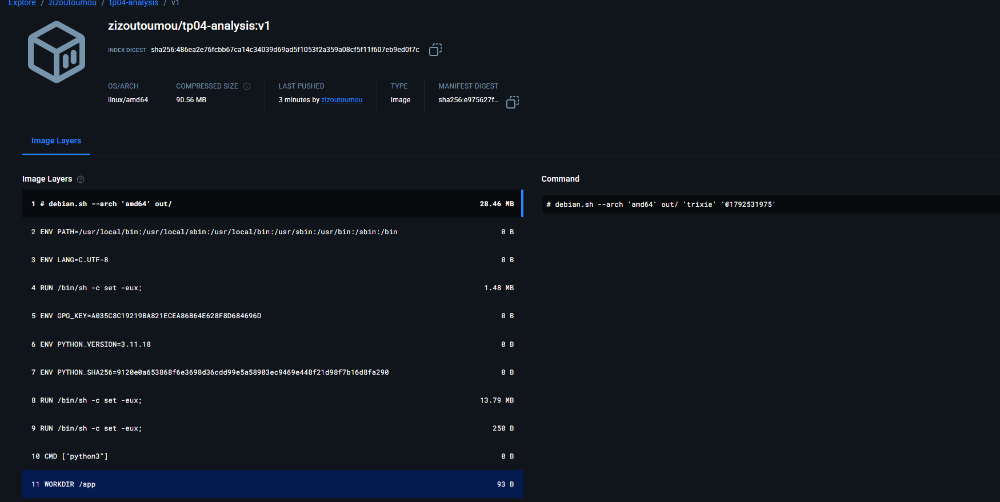
zizoutoumou/tp04-analysis:v1 (index digest, size, platform).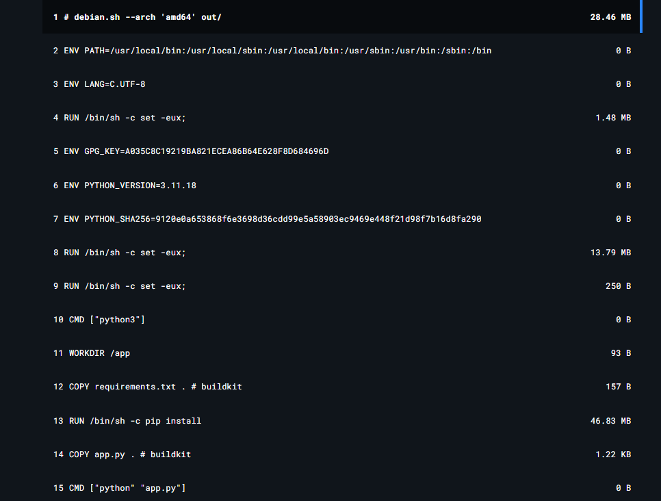
python:3.11-slim, then COPY requirements.txt, RUN pip install, COPY app.py and CMD come from my Dockerfile.2.7 Pull the image from Docker Hub
docker rmi zizoutoumou/tp04-analysis:v1 docker images docker pull zizoutoumou/tp04-analysis:v1 docker images
The local image was deleted first (the first docker images no longer lists it), then downloaded again from Docker Hub. The pulled digest
sha256:486ea2e7… is identical to the pushed one, and the image ID 486ea2e76fcb is the same as before the deletion.
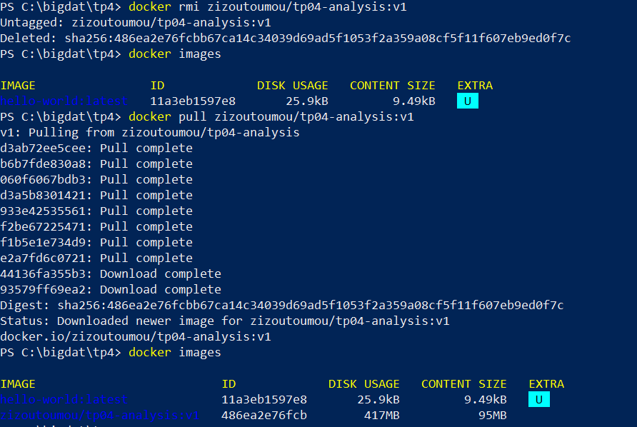
3. Task 3 – Containers
Three containers were created from the pulled image and connected to a user-defined network.
docker network create bigdata-net
docker network ls
docker run -d --name analysis1 --network bigdata-net -p 8081:80 -v "${PWD}/data:/app/data:ro" zizoutoumou/tp04-analysis:v1 sleep infinity
docker run -d --name analysis2 --network bigdata-net -p 8082:80 -v "${PWD}/data:/app/data:ro" zizoutoumou/tp04-analysis:v1 sleep infinity
docker run -d --name analysis3 --network bigdata-net -p 8083:80 -v "${PWD}/data:/app/data:ro" zizoutoumou/tp04-analysis:v1 sleep infinity
docker ps
docker network inspect bigdata-net
docker network create bigdata-netcreates a private bridge network. Containers attached to it can reach each other by name.-druns the container in the background,--namefixes its name,--networkattaches it tobigdata-net.-p 8081:80maps port 8081 of the host to port 80 of the container (8082 and 8083 for the other two). The application is a batch job and does not listen on a port, so the mapping only demonstrates the syntax requested by the TP.-v ...:romounts the data folder read-only.sleep infinityreplaces the defaultCMD. The analysis script exits when it finishes, and an exited container is not “running”; this command keeps the three containers alive so they can be verified, and the analysis is then started inside them withdocker exec.
3.1 Network, containers and verification
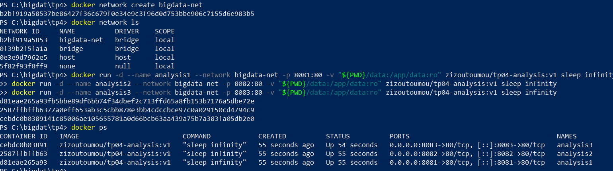
docker ps: the three containers have status Up and the ports 8081→80, 8082→80 and 8083→80.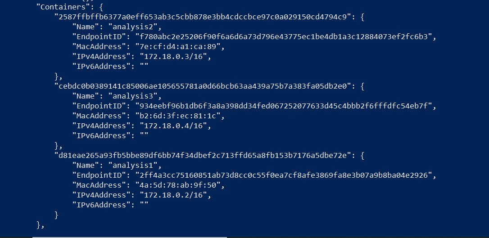
docker network inspect bigdata-net: the three containers are attached to the network (172.18.0.2, 172.18.0.3, 172.18.0.4).3.2 Communication between containers and running the analysis
docker exec analysis1 python -c "import socket; print(socket.gethostbyname('analysis2'))"
docker exec analysis1 python app.py
analysis1 resolved the name analysis2 to 172.18.0.3, which is exactly the IP shown by network inspect: the containers can talk to each other by name
through Docker's internal DNS. The second command ran the analysis inside the running container (sample file).
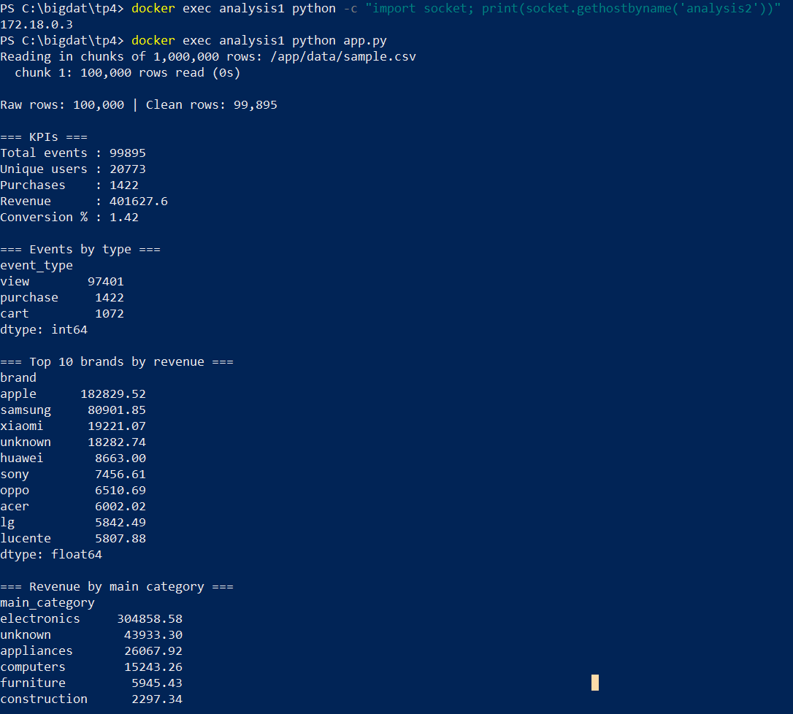
analysis1 (1/2).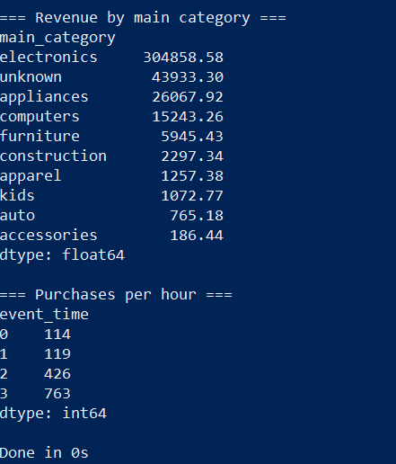
analysis1 (2/2).4. Task 4 – Run the application with Docker Compose
compose.yaml (the file of the TP, with two additions: the image name and the DATA_FILE variable so Compose processes the full November file):
services:
data-analysis:
build: .
image: zizoutoumou/tp04-analysis:v1
container_name: tp04-analysis
environment:
- DATA_FILE=2019-Nov.csv
volumes:
- ./data:/app/data:ro
restart: "no"
docker compose up --build docker compose ps -a docker compose down
docker compose up --buildbuilds the image (all layers were cached), creates the networktp4_defaultand the containertp04-analysis, runs the analysis and exits with code 0.docker compose ps -alists the container of the project. The option-ais needed to also see a container that has already stopped.docker compose downremoves the container and the network created by Compose.
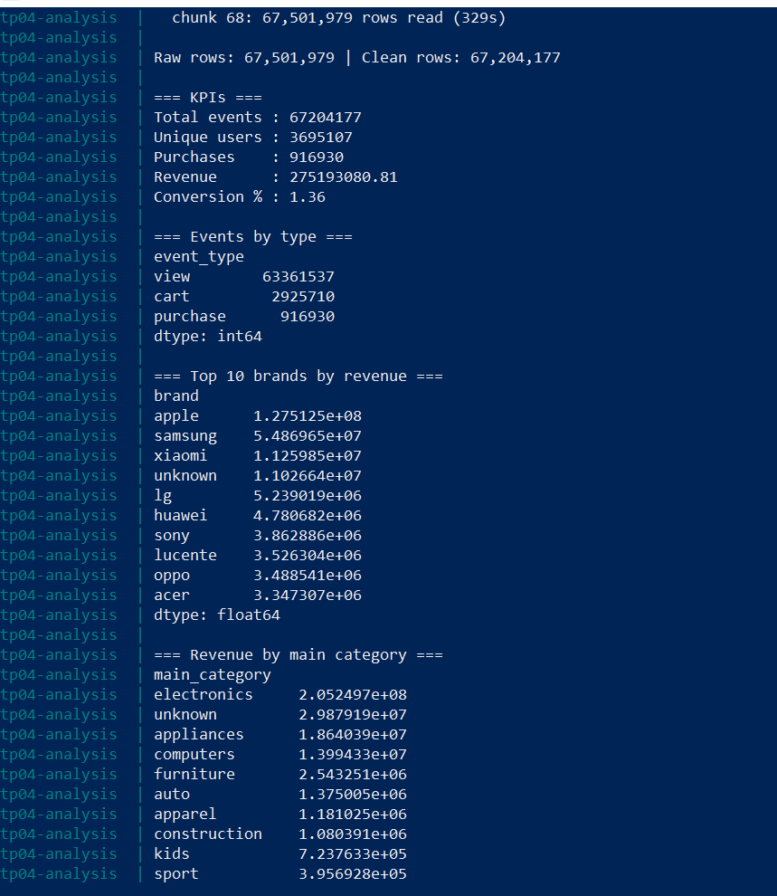
docker compose up --build on the full November file – KPIs and tables (329 s).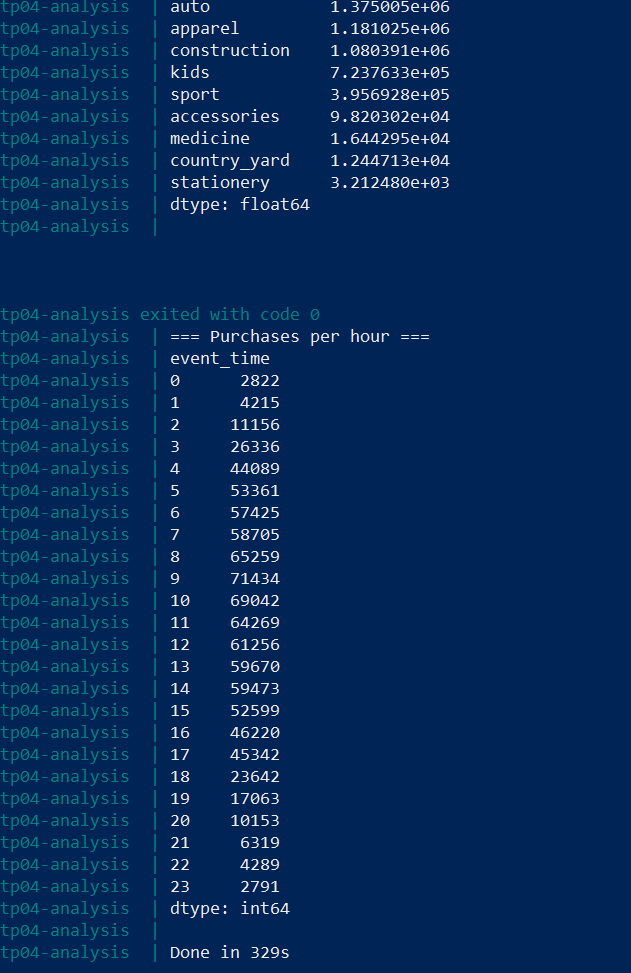
docker compose up --build – hourly purchases and exited with code 0.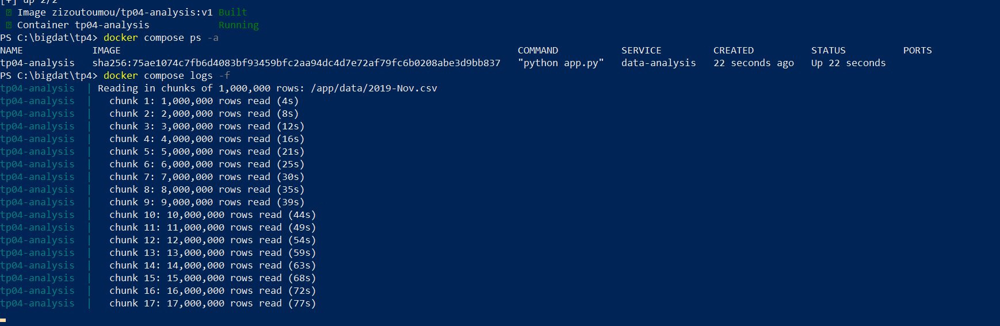
docker compose ps -a while the analysis is running: status Up, and the progress shown with docker compose logs -f.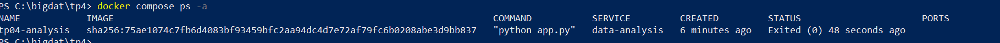
docker compose ps -a after the job: status Exited (0), i.e. finished successfully.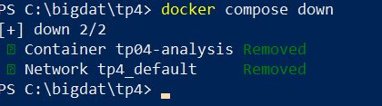
docker compose down: the container and the network are removed.Questions
What problem does Docker Compose solve?
A real environment is often made of several containers (an application, a database, a message broker…), each needing a long docker run command with its image, network, ports, volumes and environment variables.
Typing, remembering and sharing these commands is error-prone. Docker Compose describes the whole environment declaratively in one YAML file and starts, stops and removes it with a single command. The file is versioned with the code,
so the environment is reproducible on any machine. Compose also creates a shared network automatically, so the services reach each other by service name.
Compare docker run with docker compose up.
docker run | docker compose up | |
|---|---|---|
| Scope | One container | All the services of a project |
| Configuration | Command-line options, typed each time | Written once in compose.yaml |
| Image | Must exist already (built or pulled before) | Can build it with build: / --build |
| Network | Created manually (docker network create) | Created automatically (tp4_default) |
| Reproducibility | Depends on the command that was typed | Same file gives the same environment |
| Cleanup | docker stop / docker rm for each container | docker compose down removes everything |
In this TP, Task 3 needed three long docker run commands plus a manual network, while Task 4 needed one file and three short commands. Compose uses the same engine and the same images; it is a more convenient way to drive them.
How could you extend the Compose project to include a database service?
Add a second service (for example PostgreSQL) to compose.yaml, give it a named volume so the data survives docker compose down, and make the analysis service wait for it. Both services share the default network, so the application connects using the service name db as hostname:
services:
db:
image: postgres:16
container_name: tp04-db
environment:
POSTGRES_USER: bigdata
POSTGRES_PASSWORD: bigdata
POSTGRES_DB: ecommerce
volumes:
- pgdata:/var/lib/postgresql/data
healthcheck:
test: ["CMD-SHELL", "pg_isready -U bigdata -d ecommerce"]
interval: 5s
retries: 10
data-analysis:
build: .
container_name: tp04-analysis
environment:
- DATA_FILE=2019-Nov.csv
- DB_HOST=db
- DB_NAME=ecommerce
- DB_USER=bigdata
- DB_PASSWORD=bigdata
volumes:
- ./data:/app/data:ro
depends_on:
db:
condition: service_healthy
restart: "no"
volumes:
pgdata:
The Python script would then write its results (KPIs, revenue per brand, purchases per hour) into tables with a driver such as psycopg2 or SQLAlchemy (added to requirements.txt), instead of only printing them.
In a real project the password would be kept in an .env file rather than in the YAML. The same pattern works for MongoDB, MySQL or any other database image.
5. Task 5 – Report summary
What is Docker, and why is it useful in data-science projects?
Docker is a platform that packages an application together with everything it needs to run (operating-system libraries, language runtime, dependencies, configuration) into a standard unit called a container. Containers share the kernel of the host, so they are much lighter and faster to start than virtual machines.
It is useful in data-science and big-data projects because:
- Reproducibility: the environment is fixed by the Dockerfile (Python 3.11, pandas 2.2.3), so the analysis gives the same results on any machine. In this TP, two runs of November gave identical numbers.
- Portability: the image was pushed to Docker Hub and pulled again; anyone can run it with one command, without installing Python or pandas.
- Isolation: dependencies of different projects do not conflict.
- Separation of code and data: the 14 GB of CSV files stay outside the image and are mounted read-only, and the same image processed both October and November.
- Scalability and orchestration: several containers can run in parallel (three containers on one network in Task 3) and be described as a whole with Compose, which prepares the ground for tools such as Spark clusters, databases and Kubernetes.
Explain the difference between a Docker image and a container.
A image is a read-only template made of stacked layers: it contains the files, libraries and the default command, but it does not run. It is built from a Dockerfile and can be stored in a registry such as Docker Hub (zizoutoumou/tp04-analysis:v1, 417 MB on disk, 90 MB compressed).
A container is a running (or stopped) instance of an image: Docker adds a thin writable layer on top of the image, gives it a process, a network and volumes, and starts it. Many containers can be created from one image; in Task 3, analysis1, analysis2 and analysis3 all come from the same image.
Deleting a container does not delete the image. An analogy: the image is the class (or the recipe), the container is the object (or the dish).
Explain the purpose of FROM, WORKDIR, COPY, RUN and CMD in the Dockerfile.
| Instruction | Purpose | In this TP |
|---|---|---|
FROM | Sets the base image on which the new image is built; it is always the first instruction. | FROM python:3.11-slim: a small Debian image with Python 3.11 already installed. |
WORKDIR | Sets the working directory inside the image (creates it if needed) for the following instructions and for the running container. | WORKDIR /app |
COPY | Copies files from the build context (my machine) into the image. | COPY requirements.txt . then COPY app.py . |
RUN | Executes a command at build time and saves the result as a new layer (installing packages, for example). | RUN pip install --no-cache-dir -r requirements.txt |
CMD | Defines the default command executed when a container starts. It is not run during the build and can be overridden at docker run. | CMD ["python", "app.py"]; overridden with sleep infinity in Task 3. |
requirements.txt is copied and installed before app.py on purpose: Docker caches each layer, so when only app.py changes, the slow pip install layer is reused. This is why the rebuild done by Compose took under 2 seconds.
6. Limitations and notes
- Duplicate rows are removed inside each chunk (1 or 2 million rows), not across the whole file, because a global
drop_duplicateswould need all rows in memory. The effect on the totals is expected to be very small. - Large numbers appear in scientific notation in the console (for example
1.275125e+08= 127,512,500); this is only a display format. - The hourly breakdown uses the UTC timestamps of the dataset.
- Compose retagged
zizoutoumou/tp04-analysis:v1locally with a fresh build (same layers, new manifest). The image on Docker Hub was not modified. - The raw CSV files are not in the repository because of their size (14 GB). They can be downloaded from Kaggle: eCommerce behavior data from multi-category store (mkechinov) and placed in
data/.
7. How to reproduce
git clone <this repository>
cd <repository>
# put 2019-Oct.csv and 2019-Nov.csv (from Kaggle) in ./data
docker pull zizoutoumou/tp04-analysis:v1
docker run --rm -e DATA_FILE=2019-Nov.csv -v "${PWD}/data:/app/data:ro" zizoutoumou/tp04-analysis:v1
# or with Compose
docker compose up --build
docker compose down
8. Files in this repository
app.py,requirements.txt,Dockerfile,.dockerignore,.gitignore,compose.yamlimages/– screenshots used in this reportTP04_report.html– this reportREADME.md